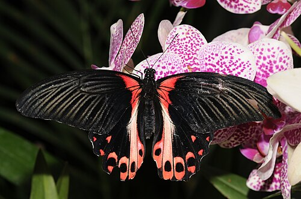

Парусник Румянцева (лат. Papilio Rumanzovia) — вид бабочек из семейства Papilionoidae(Парусники).
Описание
Размах крыльев 12—14 см. Передние крылья самца с верхней стороны чёрные с серебристо-серым напылением вдоль жилок крыла. Задние крылья самца синевато-серым напылением. С нижней стороны вдоль края заднего крыла ряд пятен с розово-красной обводкой крупные. Изредка розовый рисунок замещается жёлтым.
Окраска самки отличается от самца — выражен половой диморфизм. Её передние крылья с более выраженным серовато-кремовым напылением вдоль жилок. Корни крыльев с яркими малиново-красными вертикальными полосами. Часто встречаются экземпляры с задними крыльями, на которых внутренняя область крыла — белого цвета, прорезанная тёмными жилками. Нижняя сторона крыла с розово-красными пятнами.
У самцов существует только одна цветовая форма, тогда как у самок существует несколько цветовых форм: у одних широкая красная полоса на крыльях, другие с ярко-красными пятнах на верхней стороне крыльев.
Распостранение
Индонезия, Филиппины, Борнео, Ява, Суматра, Сулавеси.